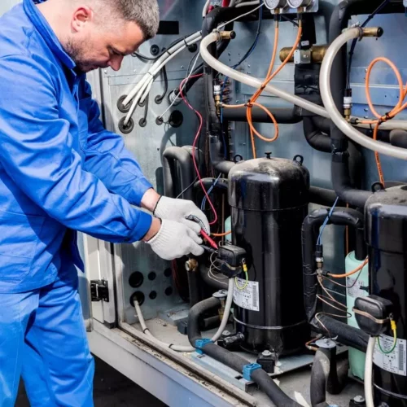
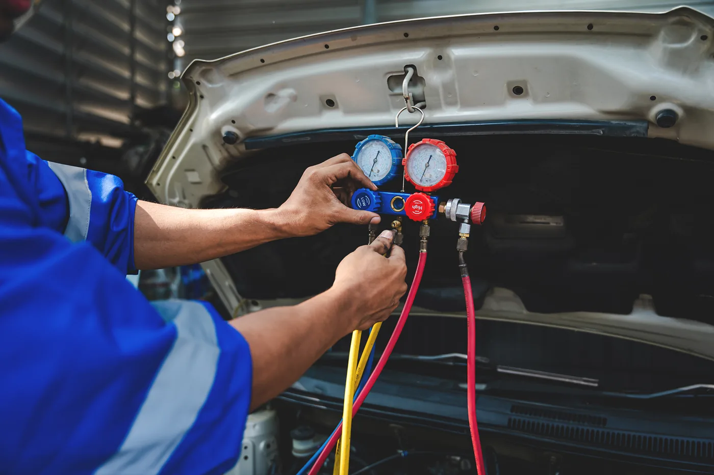
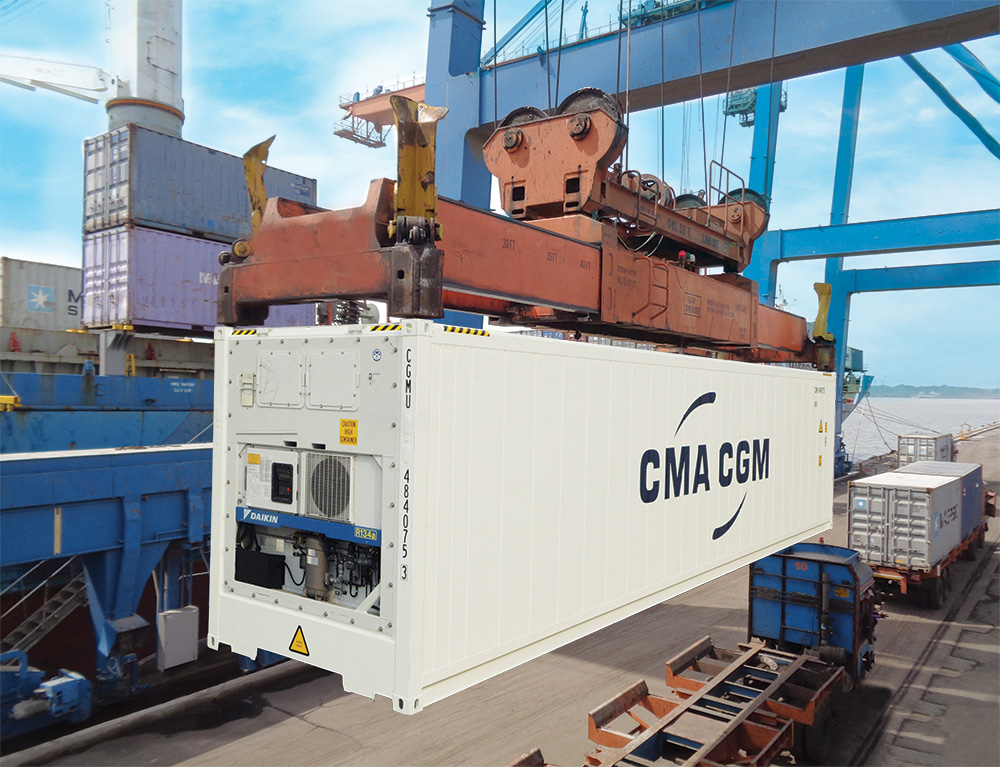
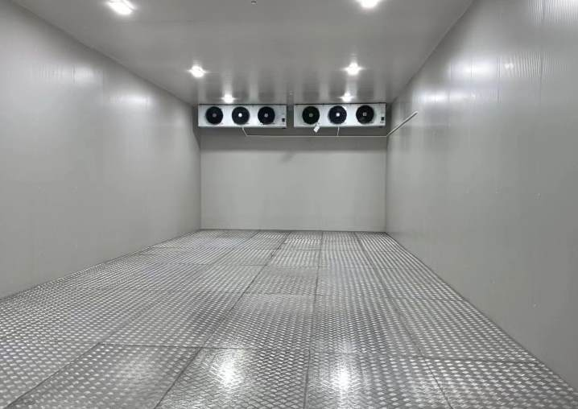
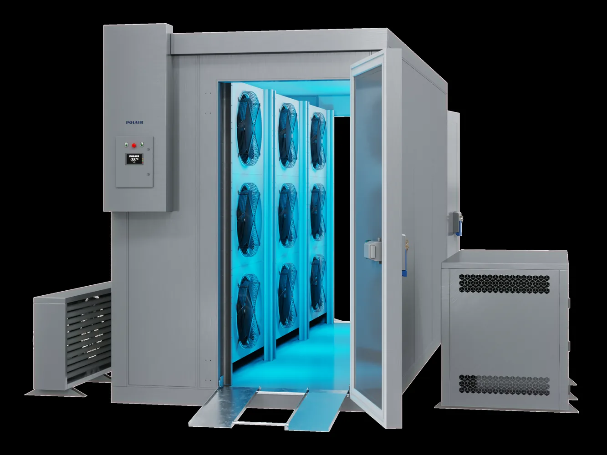

Ремонт рефрижераторов и холодильного оборудования.
Во Владивостоке: авторефрижераторы, рефконтейнеры, автокондиционеры и промышленные камеры. Диагностика, ремонт и монтаж. Сначала согласуем состав работ и стоимость, затем приступаем.
Все услуги
по холодильным системам.
От срочного выезда до проектирования камеры с нуля. Выполняем диагностику, ремонт, монтаж и сервис — с понятной стоимостью и гарантией.

Ремонт
рефрижераторов
Авторефрижераторы, прицепы и рефконтейнеры. Диагностика, компрессоры, фреон, электрика.
Обсудить задачу ↗
Изготовление
рефрижераторов
Утепление кузова, монтаж установки и запуск — полный цикл под ваш транспорт и маршрут.
Рассчитать проект ↗
Ремонт автокондиционеров
во Владивостоке
Заправка, поиск утечек, компрессоры и изготовление шлангов для авто и спецтехники.
Подробнее ↗
Ремонт
рефконтейнеров
Диагностика и ремонт холодильных установок контейнеров Carrier, Thermo King и других марок.
Получить консультацию ↗
Морозильные
камеры под ключ
Проектирование, монтаж, автоматика и сервис для рыбного, мясного производства и ритейла.
Подробнее ↗
Камеры
шоковой заморозки
Производительные решения до −45°C, аренда мобильной камеры и запуск под ваш продукт.
Подробнее ↗Диагностика.
Согласование. Проверка.
Поэтому мы строим сервис вокруг скорости, точной диагностики и понятной ответственности.
Поговорить с инженером ↗Сначала разбираемся
Находим причину, а не просто меняем первую попавшуюся деталь. Фотоотчёт и смета — до начала работ.
Запчасти уже рядом
Работаем с проверенными поставщиками и держим ходовые позиции на складе во Владивостоке.
Отвечаем за результат
Договор, понятный состав работ, документы для бухгалтерии и один контакт на весь проект.
Владивосток
и Приморский край.
Приём техники и возможность выезда согласуйте с мастером по телефону. Для объектов в других городах Дальнего Востока отдельно обсудим объём работ, дорогу и сроки.
Уточнить приём или выезд ↗Обслуживание оборудования
по договору.
Обсудим плановое ТО холодильных камер и авторефрижераторов, диагностику и ремонт. Состав работ, график обслуживания и условия выезда согласуем под ваш объект или парк.
Обсудить обслуживание ↗Четыре шага
до исправной системы.
Фиксируем задачу, объясняем причину неисправности и согласовываем работы до начала ремонта. Вы понимаете, что происходит, на каждом этапе.
Заявка
Пишите в мессенджер или звоните. Можно сразу прислать фото и модель оборудования.
Диагностика
Инженер уточняет симптомы, оценивает срочность и предлагает понятный план.
Ремонт
Согласовываем смету и выполняем работы в оговорённые сроки.
Проверка
Проверяем работу системы, передаём документы и остаёмся на связи после запуска.
Сначала факты.
Потом решение.
Чтобы инженер быстрее сориентировался, приложите к заявке марку оборудования, фото шильдика, код ошибки и описание симптомов.
Что подготовить для диагностики?
Марку и модель установки, тип транспорта или камеры, симптомы, код ошибки и фото шильдика. Для камеры дополнительно нужны размеры помещения, продукт и требуемый температурный режим.
Сколько стоит выезд и ремонт?
Стоимость зависит от оборудования, срочности и объёма работ. После уточнения задачи инженер согласует состав диагностики и смету до ремонта.
Как передать обращение мастеру?
Позвоните или напишите в мессенджер. Форма ниже только подготавливает текст для WhatsApp: отправьте его в открывшемся приложении. Приём техники, выезд и сроки мастер подтвердит отдельно.
Работаете только во Владивостоке?
Основной регион — Владивосток и Приморский край. Возможность выезда в другие города Дальнего Востока согласовывается по объекту и задаче.
Расскажите,
что нужно сделать.
Марка оборудования или автомобиля, неисправность и город.
Нужен срочный ремонт? Позвоните: возможность и время приёма или выезда подтвердит мастер.